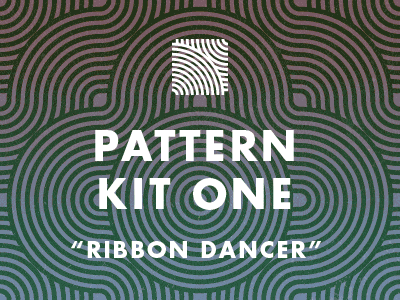
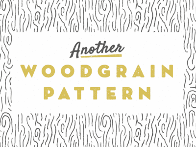
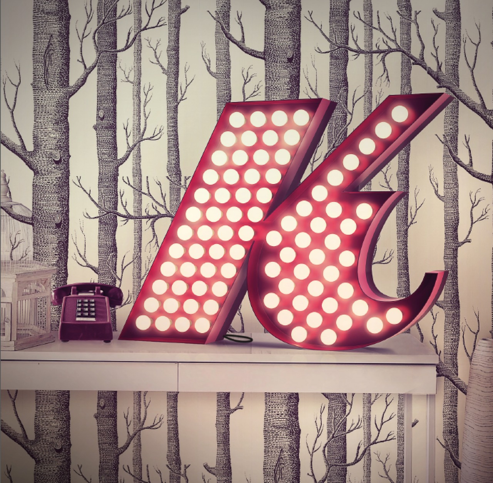
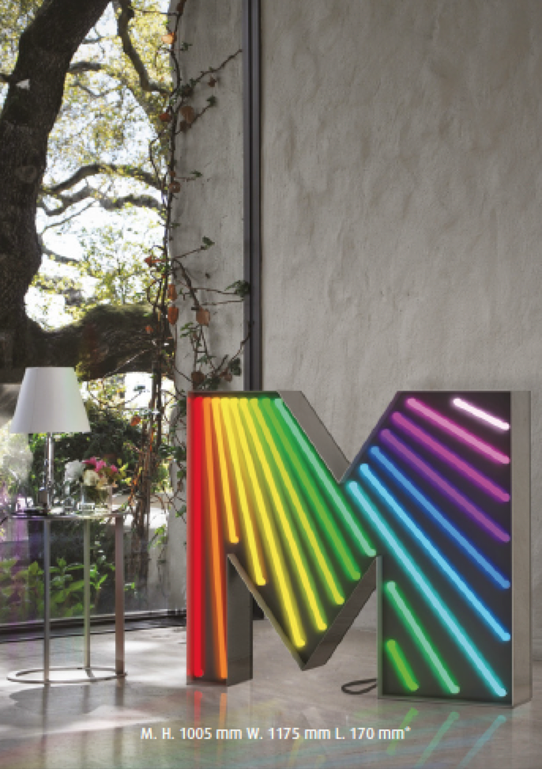
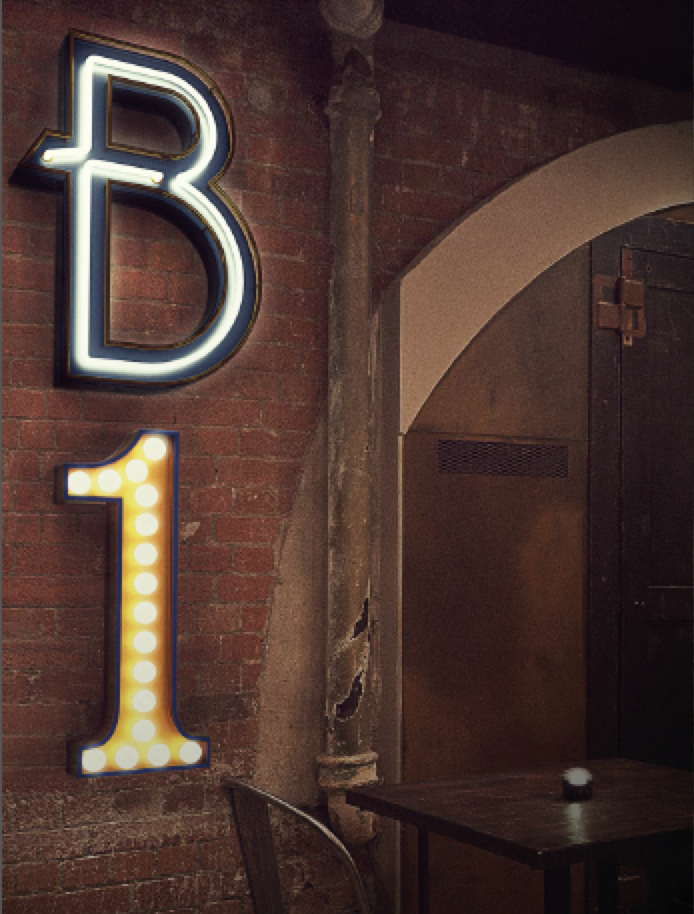
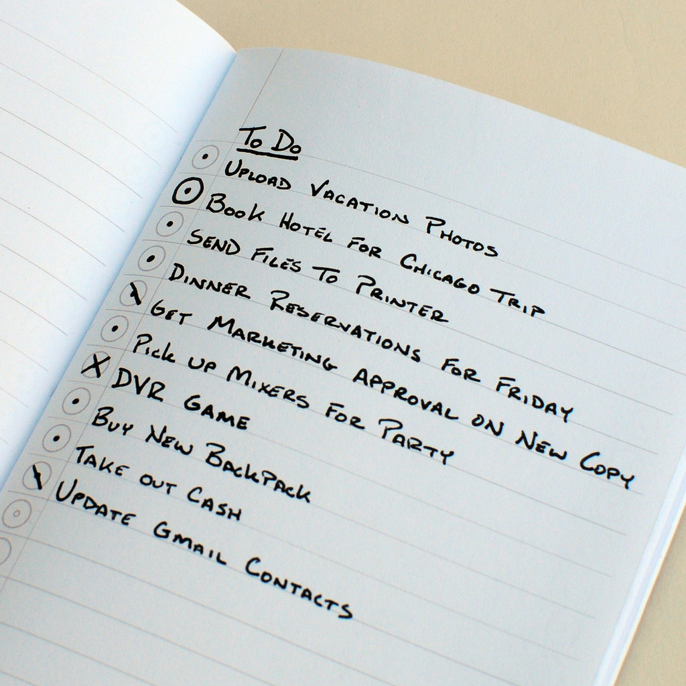

May 2013
05/24/2013 10:51:08
¶
●
I want to introduce you to your brother from another mother—another group of humans that, like you, is quite under-appreciated: the type designer. Type designers and web designers have an amazing amount in common, that’s why it’s super wonderful that they’ve been collaborating more lately. Web designers are pumped that they can use more than a handful of fonts on the internet, and type designers are pumped that this new group of people using their fonts actually know how to use computers.
A wonderfully thorough and helpful guide to type design targeted towards web designers by Jessica Hische.
#typography #design
05/21/2013 14:59:00
¶
●


Designer Janna Hagan put together a great list of unique repeatable backgrounds. This is a great resource for anyone looking to add a background image to one of our Style Hatch Tumblr themes.
#design #photoshop #themes #patterns
05/21/2013 13:59:00
¶
●
Tumblr is an aesthetic pleasure, like entering a modern art museum for the first time.
Baig: A Tumblr guide for newbies
#tech #tumblr
05/21/2013 13:38:19
¶
●
quickmultiball:
Daft Punk in Cinema 4D! Get the models free at Greyscalegorilla
Created by Nick Campbell of Grayscale Gorilla If you’re looking to learn 3d rendering, compositing or animation Grayscale Gorrilla is a fantastic resource.
#daft punk #Cinema 4D #render
05/20/2013 16:15:14
¶
●
David always obsessed over his newest ideas, features, and designs until they were completely polished and ready to go. He’s a workaholic — he truly lives and breathes Tumblr. I’ve never even seen him show any desire to work on a side project. David is all Tumblr, all the time. […]
We — internet users, creative people, publishers, socializers — will be much better served if David can focus on his product’s features, design, and messaging instead of worrying about server architecture and raising more money.
This is why I’m optimistic about the Yahoo acquisition.
Marco Arment skillfully articulates the early days of Tumblr and David Karp’s unrelenting focus on Tumblr. Tumblr has very bright days ahead.
#tumblr #tech #product
05/20/2013 11:29:00
¶
●
ryanleecarson:
Profit is an enabler. It’s usually (not always) an indicator that you’re doing something that your customers really need, at a price point that makes sense. Profit gives an organization the ability to iterate faster, reach more people and beat subpar competitors. And most importantly, stay in business.
Entrepreneurs: Don’t listen to the “must be not-for-profit if you want to change the World” bullshit. The folks who figure out how to build a truly profitable and lasting company will be the ones that really change the World.
#business #entrepreneurship #ideas
05/20/2013 10:03:00
¶
●



typeworship:
Graphic Lamps by Delightfull
I love these floor, table and wall lamps based on different typefaces. There are some truly beautiful lights in their alphabet and numeral set. I think I need that slab serif ‘E’.
Delightfull, who are based on Porto, will be at Clerkenwell Design Week coming up next week in London.
Thanks to @Mae84 for the awesome link.
#Typography #neon #interior
05/20/2013 07:39:20
¶
●
We’re not turning purple. Our headquarters isn’t moving. Our team isn’t changing. Our roadmap isn’t changing. And our mission – to empower creators to make their best work and get it in front of the audience they deserve – certainly isn’t changing.
So what’s new? Simply, Tumblr gets better faster. The work ahead of us remains the same – and we still have a long way to go! – but with more resources to draw from.
David Karp, Tumblr Staff: News!
#tumblr #yahoo
05/20/2013 07:35:38
¶
●
marissamayr:
I’m delighted to announce that we’ve reached an agreement to acquire Tumblr!
We promise not to screw it up. Tumblr is incredibly special and has a great thing going. We will operate Tumblr independently. David Karp will remain CEO. The product roadmap, their team, their wit and irreverence will all remain the same as will their mission to empower creators to make their best work and get it in front of the audience they deserve. Yahoo! will help Tumblr get even better, faster.
I am feeling quite optimistic that Yahoo is going to get it right with Tumblr and “not screw it up”. Congrats to David Karp and the entire Tumblr team.
With Style Hatch will continue to stay focused on making the best Tumblr themes available along with our stellar support and frequent updates!
#tumblr #yahoo
05/18/2013 22:45:38
¶
●

Handwritten Code for Todos
I feel like I have tried every single app, software or digital tool on the market for productivity and todo lists, but I always end up going back to the tried and true pen and paper solution. This evening I came across this handwritten todo code that Word Notebooks adds as a guide to managed your lists.
Dots for bullet points, circles for high priority, one slash for in progress and a X for completed tasks. I might have to order a pack of the Swedish Camo notebooks.
#productivity #todo #process
05/18/2013 22:23:55
¶
●
We speak of three kinds of laziness. The first is simply to spend all your time eating and sleeping. The second is to tell yourself, “Someone like me will never manage to perfect themselves." In the Buddhist context, such laziness makes you feel that it’s pointless even trying, you’ll never attain any spiritual realization. Discouragement makes you prefer not even to begin making any effort. And the third kind… is to waste your life on tasks of secondary importance, without ever getting down to what’s most essential. You spend all your time trying to resolve minor problems, one after another in an endless sequence, like ripples on the surface of a lake. You tell yourself that once you’ve finished this or that project you’ll start giving some meaning to your life.
Matthieu Ricard, in his book of conversations with his philosopher father, “The Monk and the Philosopher"
An excerpt from the post The Three Kinds of Laziness by Gary Tan.
#philosophy #ideas #laziness
05/17/2013 14:32:00
¶
●
It’s time for a refresh.
This week I started the process out by coming up with a fresh new concept for a personal logo mark, visual styles and design elements.
I have only begun to make changes to my site by applying our latest theme Jetty and updating the visuals, but over the next few weeks I will relaunch my portfolio of the last decade’s work and announce new projects that the Style Hatch team is working on.
Also, starting next week I am launching a weekly email newsletter where I send out original articles, stories and insights designed to help you take action on your ideas, spark creativity, and brave the unknown. Subscribe to the newsletter now to make sure you get the first one that goes out Monday morning.
The photographs that appear in the animated GIF are from Folkert Gorter available under a CC Attribution 3.0 license.
#design #logo #branding #personal #gif
05/17/2013 14:01:27
¶
●
Framer
Until now the process of prototyping interaction and animations for mobile and desktop applications require you to actually build it, learn Apple’s Quartz Composer or revert to Flash.
Facebook product designer Koen Bok created an alternative that focuses on quickly building prototypes from PSDs and straight forward Javascript. Take a look at some of the Framer examples, documentation and lessons to see how Framer simplifies prototypes.
#dev #javascript #prototype #interaction
Index